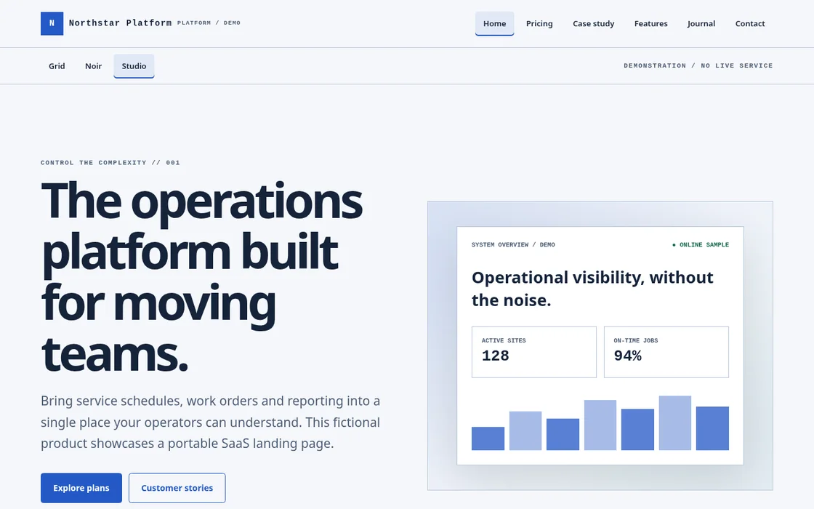

B2B SaaS website
Six original page concepts for explaining a software product, showing features and creating a coherent marketing journey.
PRODUCT RESEARCH / NOT FOR SALE
An exploratory collection of complete business website and application screen designs for developers who prefer portable markup, CSS tokens and independently owned infrastructure.
NOT FOR SALE. Syntyr Studio is an unreleased private prototype. The proposed price is research only, with no checkout, preorder, customer download, confirmed license, launch date, or production-support commitment.
The preview request opens your email app and does not transmit data to this website. Share the type of site and your stack if you want to provide private design feedback; this is not a reservation or purchase.

Try an actual free MIT dashboard example to evaluate Syntyr HTML/CSS without buying anything.
The current private candidate extends Pro to 42 screen types and 126 static variants. It includes 25 application screens and 17 website/product-preview screens; these are static compositions using fictional brands and illustrative content, not operational applications.
Six original page concepts for explaining a software product, showing features and creating a coherent marketing journey.
Five original page concepts for organizations needing clear service positioning, proof and inquiries.
Four original storefront pages plus two standalone product/checkout previews. These are presentations only, with no live catalog, cart, payments, inventory or order processing.
The Pro concept is included in the private research scope: dashboard, CRM, operations and developer views. Backend security, data and actions remain an application responsibility.
The public Console Kit gallery provides genuine screenshots of a different, smaller private concept. The Studio SaaS homepage capture above depicts a single, distinct Studio website composition, not the entire Studio kit. For complete designs already available under MIT, start with free HTML/CSS page sections and the free business example.
Core: available now, MIT-licensed, for semantic components, themes and reusable styles. Pro: proposed application screen templates. Studio: proposed application screens plus multi-page website kits. None of the proposed paid tiers is available to buy.
Review the full product research and proposed prices, compare the Pro concept, or try the free CSS tools before committing to any design system.